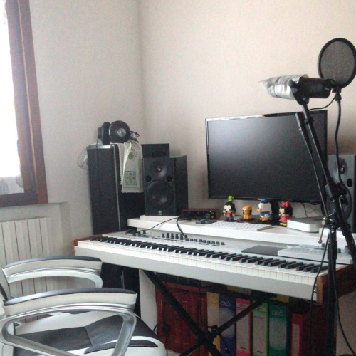

Benvenuti nel nostro piccolo spazio privato amici... Qui
condividiamo con voi, alcuni dei momenti e delle esperienze che ci
hanno portato alla composizione dei nostri brani. Se siete curiosi
di scoprire qualcosa in più sui
"dietro le quinte" del gruppo, non avete che da
leggere!
Lo Grido Stanotte
L'idea per "Lo grido stanotte" è nata in una fredda sera di
gennaio. Quel giorno ero perso nei miei pensieri, distratto
a tal punto, che suonare sembrava l'unica soluzione per
tentare di mettere a tacere la mente. Sono rimasto sveglio
tutta la not...te, con le dita incollate al piano a registrare le note
che stavano dando sfogo alla mia confusione, fermandomi
solo una volta realizzato di aver incominciato a suonare
musica già sentita. L'ispirazione era passata. Erano quasi
le 3 di mattina: ho fermato la registrazione e sono andato
a letto.
Il giorno dopo ho riascoltato tutto
ciò che avevo suonato. Tra note stonate, e accordi
inventati avevo scoperto un giro di piano che a malapena
ricordavo di aver composto. Mi piaceva come suonava, al
punto che mi venne spontaneo ritagliare la parte per
inserirla in un nuovo progetto di Logic. Ho passato una
giornata intera a lavorarci su: ascoltando, incrociando,
spezzando e rielaborando le note di qugli accordi
speciali. Piano piano la canzone ha iniziato a prendere
forma assieme alla base principale del suo arrangiamento.
Mancava ancora il ritornello allora, ma sapevo che
mettendo insieme le mie idee con quelle di Sofia sarebbe
saltato fuori qualcosa di bello.
In realtà, la base la tenni da parte per un po’: volevo
costruire un testo adatto prima di fargliela ascoltare.
Così, ripescando un po’ di frasi scritte quà e là in
passato, ho iniziato a farmi un idea del messaggio che
volevo mandare trovando un filo conduttore per fondere
quei pensieri e rimodellarli in un unico testo. Poi, una
sera al bar ho desiso finalmente di farle leggere il testo
facendole ascoltare la bozza della base che avevo creato.
Ho capito dallo sguardo sul suo viso che l'idea le piaceva
e coì insieme, abbiamo subito iniziato a parlare di come
avrebbe potuto essere costruito il ritornello. Ancora una
volta, le idee di Sofia si sono unite perfettamente alle
mie, arrivando a dar voce pienamente alla canzone che
avevo in testa.
Una curiosità carina: fino a poco prima che decidessimo di pubblicarla, il nome
di questa canzone è rimasto “Piano ideas” il nome che
avevo dato al progetto iniziale. Poi abbiamo deciso di
intitolarla con la prima frase del ritornello, che rende
benissimo l’idea della canzone: un grido nella notte che
però non fa paura.
The Beast
Ultimo aggiornamento 12/06/2021

Le parole per cui non ho voce
Le parole per cui non ho voce è una canzone nata una sera
d'estate del 2018. Lavoravamo entrambi all' "Osteria dei
Tigli" all'epoca, la sagra più famosa di Bazzano, il paese
in cui siamo cresciuti. Ricordo che quella sera Andrea
accompagnò me e mia sorella a casa dopo il servizio e ci
fe...ce ascoltare una base che aveva composto. Me ne innamorai
al primo ascolto. La base era semplice ma girava bene e
rimaneva in testa come un loop. Ricordo che scesi dalla
macchina dicendo: "Mandami la base forse ho un idea".
Il giorno dopo non pensavo ad altro. Andrea mi mandò il
testo a cui aveva pensato e nel giro di venti minuti
nacque la melodia per le lyrics. Arrivai a lavoro la sera
dopo emozionatissima. Ero ansiosa di far ascoltare ad
Andrea ciò che ero riuscita a creare sperando che l'idea
gli piacesse. Non avevo mai cantato di fronte a nessuno
prima e mi impappinai almeno tre volte prima di riuscire
ad esprimere concretamente qualcosa di sensato. Ma una
volta iniziato tutto filò liscio. Andrea fu entusiasta del
modo in cui le nostre idee erano riuscite a completarsi in
quella bozza che poi è diventata il nostro primo singolo e
una volta iniziato fu naturale lavorare assieme per finire
il pezzo.
All'inizio ammetto che è stata una lotta ahah, trovare i
nostri ruoli e mettersi d'accordo su come procedere alla
composizione del pezzo mettendo d'accordo entrambi ha
richiesto tempo. Ma credo che la cosa bella mia e di
Andrea sia questo. Siamo stati amici per una vita prima di
iniziare a fare musica insieme. Ciò vuol dire che
conosciamo i nostri gusti, i nostri relativi caratteri
sapendo quand' è il momento di trovare compromessi, anche
nella musica. Durante la composizione più di una volta
abbiamo scoperto che dai dubbi di uno o dell'altro
finiscono per uscire idee migliori percui ora non ci
limitiamo mai alla prima versione del pezzo. Modifichiamo
e modifichiamo finchè entrambi non ci mettiamo a ballare
come cretini nella stanza perchè la canzone funziona. E
credo che continuerà a funzionare. Funzionerà sempre
finché la nostra musica continuerà ad essere un
prolungamento naturale della nostra amicizia. Solida,
spensierata e assolutamente non professionale come le note
che scriviamo assieme.